Cherche d'abord ta réponse, puis ouvre la correction.
Niveau facile
Sur une droite graduée, quand dit-on que (A, B ; C, D) est une division harmonique ?
CA / CB = −DA / DB
CA / CB = DA / DB
CA × CB = DA × DB
CA + CB = 0
Voir la correction de la question 1
Réponse A. CA / CB = −DA / DB
(A, B ; C, D) est harmonique si CA / CB = −DA / DB, avec des mesures algébriques. Un des points C, D est entre A et B, l'autre est à l'extérieur du segment.
Niveau moyen
(A, B ; C, D) est une division harmonique et I est le milieu de [AB]. On a IA = 5 cm et IC = 2 cm (C entre I et B, D du même côté). Que vaut ID ? (relation de Newton : IA² = IC × ID)
2,5 cm
10 cm
12,5 cm
25 cm
Voir la correction de la question 2
Réponse C. 12,5 cm
Relation de Newton : IA² = IC × ID, donc ID = IA² / IC = 25 / 2 = 12,5 cm. C est à l'intérieur de [AB] et D à l'extérieur, du même côté de I. On retrouve l'idée de la relation de Newton en optique : un produit de deux distances égal à un carré.
Niveau difficile
Sur une droite graduée : A(0), B(6), C(2). Quelle est l'abscisse de D pour que (A, B ; C, D) soit une division harmonique, c'est-à-dire CA/CB = −DA/DB ?
−6
4
12
−2
Voir la correction de la question 3
Réponse A. −6
CA/CB = (0 − 2)/(6 − 2) = −0,5. Il faut donc DA/DB = +0,5 : (0 − d)/(6 − d) = 0,5 ⟺ −d = 3 − 0,5d ⟺ d = −6. Vérification avec Newton (I milieu de [AB], abscisse 3) : IA² = 9 et IC × ID = (2 − 3)(−6 − 3) = 9 ✓.

Niveau moyen
Sur une droite graduée : A a pour abscisse 0, B a pour abscisse 4 et C a pour abscisse 1.
Détermine l'abscisse du point D, conjugué harmonique de C par rapport à A et B.
−2
2
8
−4
Voir la correction de la question 4
Réponse A. −2
CA / CB = (0 − 1) / (4 − 1) = −1/3. Avec D d'abscisse d : −DA / DB = d / (4 − d). On pose d / (4 − d) = −1/3, donc 3d = −(4 − d), soit 2d = −4 et d = −2. Contrôle : DA/DB = 2/6 = 1/3 et −DA/DB = −1/3 ✓.
Niveau difficile · Calcul
Sur une droite graduée : A a pour abscisse 0, B a pour abscisse 10 et C a pour abscisse 4. (A, B ; C, D) est une division harmonique.
Quelle est l'abscisse de D ?
Réponse sans unité, arrondie à l'unité, avec son signe.
Voir la correction de la question 5
Réponse : −20.
CA / CB = (0 − 4) / (10 − 4) = −4/6 = −2/3. Avec D d'abscisse d : −DA / DB = d / (10 − d) = −2/3, donc 3d = −20 + 2d et d = −20. Contrôle : DA/DB = 20/30 = 2/3 ✓.
Le QCM compte 12 questions sur ce thème. Chacune est corrigée et expliquée, et celles que tu rates reviennent toutes seules à 1, 3, 7, 14 et 30 jours.